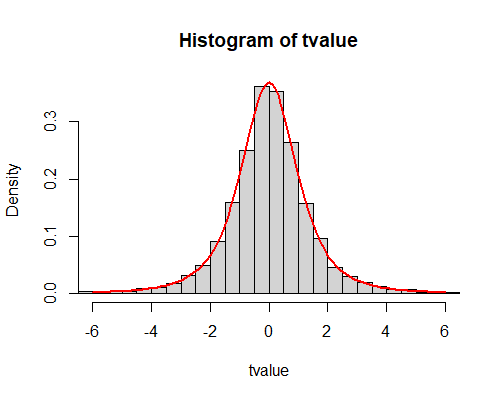

〈解説〉第一種の過誤
第一種の過誤とは「生産者危険」
第一種の過誤とは、帰無仮説が正しいのに棄却してしまう誤りのことです。工場で1つ200gの製品を作っているとして、無作為にサンプルを抽出すれば、平均値は200gになるはずです。このとき、誤って帰無仮説を棄却してしまうと（つまり、製品は平均200gとはいえないから、出荷してはいけない、と誤った判断をすると）、規格通りに正しく生産された製品が出荷できず、生産者の損失となります。つまり、「生産者」にとっての「危険」なのです。
帰無仮説が正しい状況でのシミュレーション
ここでは、乱数データをもちいて「標本平均値は母平均と等しい」という帰無仮説を検定します。たとえば、正規分布にしたがう母集団（\(\mu=0,\sigma=1\)）からデータを抽出して、標本平均を計算すれば、当然、標本平均は\(\bar x=0\)に近い値になりそうです。が、母集団にはさまざまな個体がありますから、データをとるたびに標本平均もばらつきます。結果、20回に1回くらいは、検定結果が\(p\lt.05\)となり、「母平均は0とはいえないようだ」という判断をすることになるのです。本当でしょうか？試してみましょう。
〈使用方法〉第一種の過誤
母集団パラメータの設定
母集団は正規分布であると仮定します。母平均と母標準偏差を、任意の値に設定してください。初期値は\(\mu=0,\sigma=1\)です。とくに理由がなければ、初期値のまま実行しましょう。
標本サイズの設定
母集団から抽出する標本サイズを指定します。標本を抽出するごとに平均値を計算し、「標本平均は母平均と等しい」という帰無仮説を検定します（一標本t検定）。画面には、標本平均値、t値、p値を、線香花火プロットおよびバーコードプロットで表示します。
繰り返し回数の設定
上記の「標本抽出～t検定」を何回シミュレーションするかを設定します。回数が少ないと結果が大きくばらつくことがあるので、1000回くらいで試して要領がつかめたら、5000～10000回くらいで実行してください。
所要時間は、繰り返し回数1000で約70秒です（Windows10, Core i7, Chrome 124 で測定。ご利用の環境に依存します）。
〈雑記帳〉第一種の過誤の確率をシミュレーションする
このシミュレーションは、「数値シミュレーションで読み解く統計のしくみ」第5章をもとに作成しています。第一種の過誤については、以下のように説明されています。
心理学では帰無仮説を誤って棄却してしまう確率であるタイプIエラー確率を5％以下にするように設計します。この「許容されるタイプIエラー確率」のことを有意水準（significant level）と呼び、\(\alpha\)と表記します。（前掲書, p.311, 太字は著者）
前掲書では、もっとも基本的な検定として「対応のないt検定」が取り上げられています。これに直接対応したシミュレーションは別ページで紹介します（作成中...）。このページで行っているシミュレーションでは、より単純な「一標本t検定」を取り上げています。
t値やp値の分布って見たことがない
前掲書をお読みいただくとわかりますが、途中、「p値」のヒストグラムを描いている部分があります。こういうヒストグラムを、わたしははじめて目にしました。「おお、こうしてシミュレーションするとp値は範囲[0,1]で一様分布するのか！」という驚きです。まあ、当たり前なんでしょうけど。
でも、どうして「当たり前」なのか、説明できますか？ わたしはしばらく沈思黙考していますが、まだ言語化する自信がありません。
それと、前掲書では出していないのですが、どうせならと思って、シミュレーションではt値のヒストグラムも描いています。すごいですねえ、ちゃんとt分布してるようです！（当たり前）だって、
t検定のときに計算される検定統計量Tは、帰無仮説が正しいときにt分布に従います。（前掲書, p.308）
って書いてありますから！ できることなら、標本平均の分布（平均値\(\mu\)、分散\(\sigma^2/n\)）を使って、Z検定すればいいんです。でも、母分散がわからないので、それを標本から計算した分散（不偏分散）で代用して、ちゃんと性質のわかっている確率分布にしたがう確率変数に変換しよう！というのがt検定の発想なんですね。だから、ｔ値がt分布するのは当たり前です。でも。見たことないんじゃありませんか？ t値のヒストグラムを見て「確かにt分布するなあ」って、思ったこと、ないんじゃありませんか？ 少なくとも私ははじめてでした。
とはいえ、シミュレーションで描いたヒストグラムは、単にヒストグラムを描いているだけで、t分布の確率密度曲線を重ね描きしているわけではありません。それはRで～（Javascriptで、うまいこと重ね描きできるかどうかよくわからないので、実装していないのです）。なのになぜ、「t分布する」と言えるのかというと、「分布の裾の持ちあがり方」が「t分布らしい見た目をしている」からです！ そんなざっくりした理由でいいのだろうかとも思いますが。

いちおう、Rで描いたプロットものせておきます。1万回シミュレーションしたt値の分布と、赤線が自由度3（標本サイズ4なので）のt分布です。ほら、ぴったりでしょ！ （実際、t値はもっと絶対値の大きいのも出ていて、最大値は20.0、最小値は-23.9だったんですが、分布形状が見やすくなるように、±6の範囲で描いています。）
こんな単純な検定でも5％くらいは棄却されるのだ
最初は、有意水準を選べるように設定したのですが、作りこんでいるうちに、有意水準10％、5％、1％を、ぜんぶまとめて表示してしまえばいいのでは？ ということに気づいて、その設定をとりやめました。ランダムにサンプリングをすると、p値が0.1を下回ることが約10％あり、0.05を下回ることが約5％あり、0.01を下回ることが約1％ある、という結果が出ます。すごい。まあ、当たり前なんだけどね。わたしたちが、実際のデータで得られる検定結果はこのうちのたった一つだけ。
これ、逆向きでやれないのかなあ？
最後に、これ、逆向きでやったら面白いじゃないの？ という不穏な思い付きについて書いておきます。ここでやっているのは、
- 帰無仮説が正しい状況でサンプリングする
- それを検定すると、（帰無仮説が正しいのだから保留されるはずが）実際は数％が棄却されてしまう。
ということでした。だったら、設定を反対にしてやってみたら、
- 帰無仮説が正しくない状況でサンプリングする
- それを検定すると、（帰無仮説が正しくないのだから棄却されるはずが）実際は数％が棄却されず、保留されてしまう？
みたいになるのだろうか、ということです。さて、みなさんはどう思いますか。